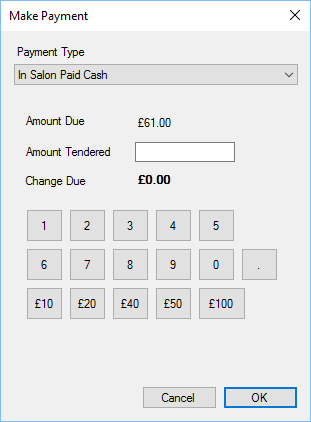

There is a handy little calculator on the cash payment screen. 
You can enter the amount tendered manually, or use the numbers 0 to 9 to enter the value. If a
customer provides for instance 2 x £20 notes and 2 x £10 notes, click the £20 button twice and
the £10 button twice. The amount of change due will be shown in bold.